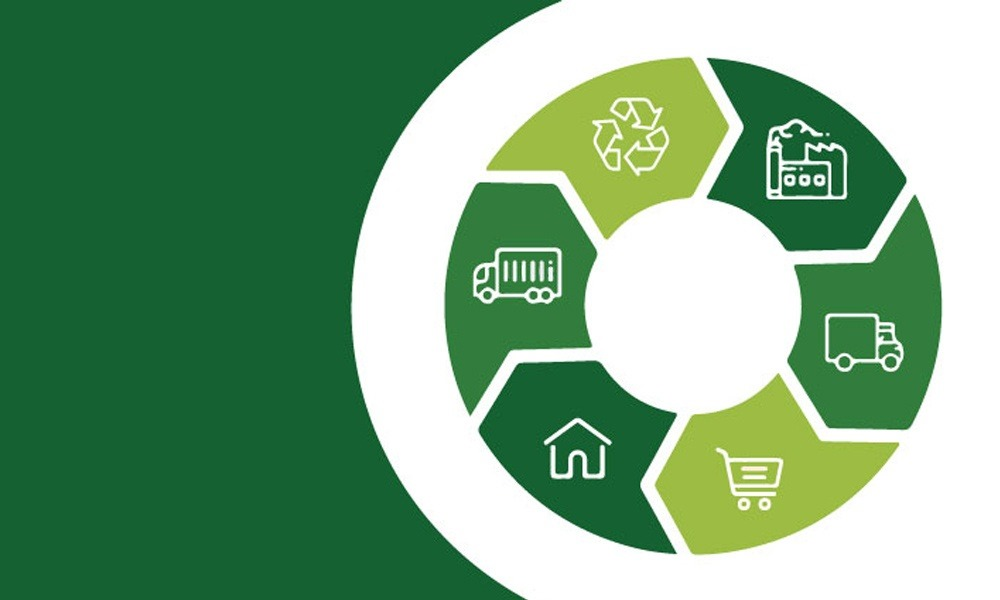

contato@reconecta.com.br
+55 81 99987-2721

DESCARTE CONSCIENTE
Tempos úteis dos dispositivos
<
>
O tempo útil dos dispositivos eletrônicos refere-se ao período
durante o qual esses aparelhos funcionam de forma eficiente e
confiável, antes de se tornarem obsoletos ou apresentarem falhas
significativas. Este tempo varia conforme o tipo de dispositivo,
sua qualidade de fabricação, frequência de uso e os cuidados de
manutenção recebidos. Entender o tempo útil é essencial para otimizar
o custo-benefício e planejar a substituição adequada, garantindo que
você aproveite ao máximo sua tecnologia, minimizando desperdícios e
promovendo um uso mais sustentável dos recursos.
Consequências do descarte
<
>
O descarte inadequado de eletrônicos tem consequências
ambientais e sociais significativas. Esses dispositivos contêm
metais pesados e substâncias tóxicas que podem contaminar solo
e água, prejudicando ecossistemas e a saúde humana. Além disso
a falta de reciclagem adequada desperdiça recursos valiosos,
como metais raros, que poderiam ser reutilizados na fabricação
de novos produtos. A gestão irresponsável do lixo eletrônico
também contribui para o aumento de resíduos em aterros sanitários,
exacerbando problemas de poluição. Portanto, é crucial promover a
reciclagem e o descarte consciente para mitigar esses impactos e
fomentar a sustentabilidade.
A importância da logística reversa
<
>
A logística reversa é essencial para a gestão sustentável
de produtos após o consumo. Ela permite a reutilização e
reciclagem de materiais, reduzindo a quantidade de resíduos
em aterros e a extração de novos recursos. Além de minimizar o
impacto ambiental, essa prática promove a responsabilidade
compartilhada entre todos os envolvidos na cadeia produtiva,
contribuindo para uma economia circular e um futuro mais sustentável.
Educação e conscientização pública
<
>
A educação e a conscientização pública são fundamentais para
promover práticas sustentáveis e responsáveis. Informar a população
sobre os impactos ambientais e sociais de suas ações, como o
descarte inadequado de resíduos e o consumo excessivo, é crucial
para incentivar mudanças de comportamento. Campanhas educativas e
programas de conscientização ajudam a desenvolver uma sociedade
mais informada e comprometida com a preservação do meio ambiente.
Ao aumentar o conhecimento e a responsabilidade individual e coletiva,
podemos promover uma cultura de sustentabilidade e garantir um futuro
mais saudável para todos.
contato@reconecta.com.br
+55 81 99987-2721